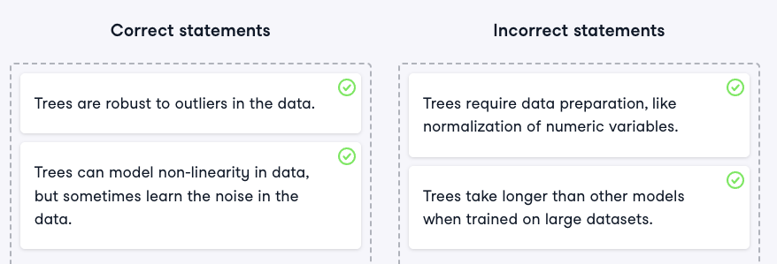
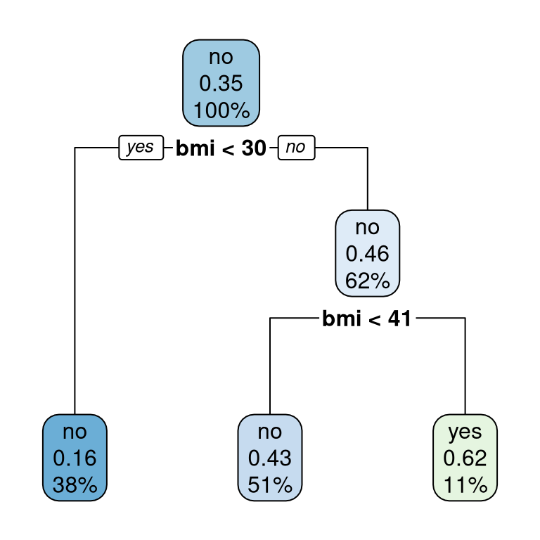
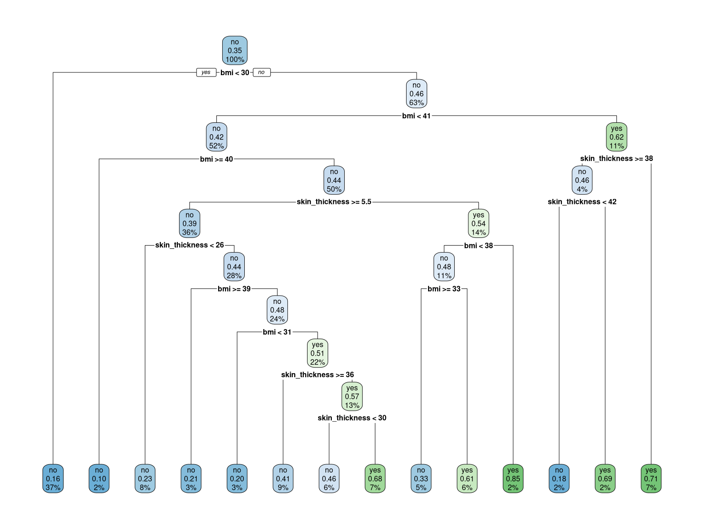

1 Classification Trees
Ready to build a real machine learning pipeline? Complete step-by-step exercises to learn how to create decision trees, split your data, and predict which patients are most likely to suffer from diabetes. Last but not least, you’ll build performance measures to assess your models and judge your predictions.
Welcome to the course! - (video)
1.1 Why tree-based methods?
Tree-based models are one class of methods used in machine learning. They are superior in many ways, but also have their drawbacks.
Which of these statements are true and which are false?
1.2 Specify that tree
In order to build models and use them to solve real-world problems, you first need to lay the foundations of your model by creating a model specification. This is the very first step in every machine learning pipeline that you will ever build.
You are going to load the relevant packages and design the specification for your classification tree in just a few steps.
A magical moment, enjoy!
Instructions
- Load the
tidymodelspackage.
library(tidymodels)- Pick a model class for decision trees, save it as
tree_spec, and print it.
# Pick a model class
tree_spec <- decision_tree()
# Print the result
tree_specDecision Tree Model Specification (unknown mode)
Computational engine: rpart - Set the engine to
"rpart"and print the result.
# Pick a model class
tree_spec <- decision_tree() |>
# Set the engine
set_engine("rpart")
# Print the result
tree_specDecision Tree Model Specification (unknown mode)
Computational engine: rpart - Set the mode to
"classification"and print the result.
# Pick a model class
tree_spec <- decision_tree() |>
# Set the engine
set_engine("rpart") |>
# Set the mode
set_mode("classification")
# Print the result
tree_specDecision Tree Model Specification (classification)
Computational engine: rpart
Note
You created a decision tree model class, used an rpart engine, and set the mode to "classification". Remember, you will need to perform similar steps every time you design a new model. Come back anytime if you need a reminder!
1.3 Train that model
A model specification is a good start, just like the canvas for a painter. But just as a painter needs color, the specification needs data. Only the final model is able to make predictions:
Model specification + data = model
In this exercise, you will train a decision tree that models the risk of diabetes using health variables as predictors. The response variable, outcome, indicates whether the patient has diabetes or not, which means this is a binary classification problem (there are just two classes). The dataset also contains health variables of patients like blood_pressure, age, and bmi.
For the rest of the course, the tidymodels package will always be pre-loaded. In this exercise, the diabetes dataset is also available in your workspace.
diabetes <- read_csv("./data/diabetes_tibble.csv")
# Change character outcome to a factor
diabetes <- diabetes |> mutate_if(is.character, as.factor)Instructions
- Create
tree_spec, a specification for a decision tree with anrpartengine.
# Create the specification
tree_spec <- decision_tree() |>
set_engine("rpart") |>
set_mode("classification")- Train a model
tree_model_bmi, where theoutcomedepends only on thebmipredictor by fitting thediabetesdataset to the specification.
# Train the model
tree_model_bmi <- tree_spec |>
fit(outcome ~ bmi, data = diabetes)- Print the model to the console.
# Print the model
tree_model_bmiparsnip model object
n= 768
node), split, n, loss, yval, (yprob)
* denotes terminal node
1) root 768 268 no (0.6510417 0.3489583)
2) bmi< 29.85 291 47 no (0.8384880 0.1615120) *
3) bmi>=29.85 477 221 no (0.5366876 0.4633124)
6) bmi< 40.85 392 168 no (0.5714286 0.4285714) *
7) bmi>=40.85 85 32 yes (0.3764706 0.6235294) *- Graph the model with
rpart.plot()
rpart.plot::rpart.plot(tree_model_bmi$fit)
Note
You have defined your model with decision_tree() and trained it to predict outcome using bmi like a professional coach! Printing the model displays useful information, such as the training time, the model formula used during training, and the node details. Remember, to fit a model to data is just a different phrase for training it. Don’t worry about the precise output too much, you’ll cover that later!
How to grow your tree - (video)
1.4 Train/test split
In order to test your models, you need to build and test the model on two different parts of the data - otherwise, it’s like cheating on an exam (as you already know the answers).
The data split is an integral part of the modeling process. You will dive into this by splitting the diabetes data and confirming the split proportions.
The diabetes data from the last exercise is pre-loaded in your workspace.
Instructions
- Split the
diabetestibble intodiabetes_split, a split of 80% training and 20% test data.
set.seed(123)
# Create the split
diabetes_split <- initial_split(diabetes, prop = 0.80)- Print the resulting object.
# Print the data split
diabetes_split<Training/Testing/Total>
<614/154/768>- Extract the training and test sets and save them as
diabetes_trainanddiabetes_test.
# Extract the training and test set
diabetes_train <- training(diabetes_split)
diabetes_test <- testing(diabetes_split)- Verify the correct row proportion in both datasets compared to the
diabetestibble.
# Verify the proportions of both sets
round(nrow(diabetes_train) / nrow(diabetes), 2) == 0.80[1] TRUEround(nrow(diabetes_test) / nrow(diabetes), 2) == 0.20[1] TRUE
Note
Using training() and testing() after the split ensures that you save your working datasets.
1.5 Avoiding class imbalances
Some data contains very imbalanced outcomes - like a rare disease dataset. When splitting randomly, you might end up with a very unfortunate split. Imagine all the rare observations are in the test and none in the training set. That would ruin your whole training process!
Fortunately, the initial_split() function provides a remedy. You are going to observe and solve these so-called class imbalances in this exercise.
There is already code provided to create a split object diabetes_split with a 75% training and 25% test split.
# Preparation
set.seed(9888)
diabetes_split <- initial_split(diabetes, prop = 0.75)Instructions
- Count the proportion of
"yes"outcomes in the training and test sets ofdiabetes_split.
# Proportion of 'yes' outcomes in the training data
counts_train <- table(training(diabetes_split)$outcome)
prop_yes_train <- counts_train["yes"] / sum(counts_train)
# Proportion of 'yes' outcomes in the test data
counts_test <- table(testing(diabetes_split)$outcome)
prop_yes_test <- counts_test["yes"] / sum(counts_test)
paste("Proportion of positive outcomes in training set:", round(prop_yes_train, 2))[1] "Proportion of positive outcomes in training set: 0.31"paste("Proportion of positive outcomes in test set:", round(prop_yes_test, 2))[1] "Proportion of positive outcomes in test set: 0.46"- Redesign
diabetes_splitusing the same training/testing proportion, but with theoutcomevariable being equally distributed in both sets. Count the proportion ofyesoutcomes in both datasets.
set.seed(123)
# Create a split with a constant outcome distribution
diabetes_split <- initial_split(diabetes, strata = outcome)
# Proportion of 'yes' outcomes in the training data
counts_train <- table(training(diabetes_split)$outcome)
prop_yes_train <- counts_train["yes"] / sum(counts_train)
# Proportion of 'yes' outcomes in the test data
counts_test <- table(testing(diabetes_split)$outcome)
prop_yes_test <- counts_test['yes'] / sum(counts_test)
paste("Proportion of positive outcomes in training set:", round(prop_yes_train, 2))[1] "Proportion of positive outcomes in training set: 0.35"paste("Proportion of positive outcomes in test set:", round(prop_yes_test, 2))[1] "Proportion of positive outcomes in test set: 0.35"
Note
Impressive - from 31% vs. 46% positive outcomes to 35% in both sets. This was a tough one, but now you know how simple it is to avoid class imbalances! This is even more important in a large dataset with a very imbalanced target variable.
1.6 From zero to hero
You mastered the skills of creating a model specification and splitting the data into training and test sets. You also know how to avoid class imbalances in the split. It’s now time to combine what you learned in the preceding lesson and build your model using only the training set!
You are going to build a proper machine learning pipeline. This is comprised of creating a model specification, splitting your data into training and test sets, and last but not least, fitting the training data to a model. Enjoy!
Instructions
- Create
diabetes_split, a split where the training set contains three-quarters of all diabetes rows and where training and test sets have a similar distribution in the outcome variable.
set.seed(9)
# Create the balanced data split
diabetes_split <- initial_split(diabetes,
prop = 0.75,
strata = outcome)- Build a decision tree specification for your model using the
rpartengine and save it astree_spec.
# Build the specification of the model
tree_spec <- decision_tree() |>
set_engine("rpart") |>
set_mode("classification")- Fit a model
model_trainedusing the training data ofdiabetes_splitwithoutcomeas the target variable andbmiandskin_thicknessas the predictors.
# Train the model
model_trained <- tree_spec |>
fit(outcome ~ bmi + skin_thickness,
data = training(diabetes_split))
model_trainedparsnip model object
n= 576
node), split, n, loss, yval, (yprob)
* denotes terminal node
1) root 576 201 no (0.6510417 0.3489583)
2) bmi< 29.85 213 34 no (0.8403756 0.1596244) *
3) bmi>=29.85 363 167 no (0.5399449 0.4600551)
6) bmi< 40.85 297 126 no (0.5757576 0.4242424)
12) bmi>=40.05 10 1 no (0.9000000 0.1000000) *
13) bmi< 40.05 287 125 no (0.5644599 0.4355401)
26) skin_thickness>=5.5 208 82 no (0.6057692 0.3942308)
52) skin_thickness< 25.5 48 11 no (0.7708333 0.2291667) *
53) skin_thickness>=25.5 160 71 no (0.5562500 0.4437500)
106) bmi>=38.8 19 4 no (0.7894737 0.2105263) *
107) bmi< 38.8 141 67 no (0.5248227 0.4751773)
214) bmi< 30.85 15 3 no (0.8000000 0.2000000) *
215) bmi>=30.85 126 62 yes (0.4920635 0.5079365)
430) skin_thickness>=35.5 51 21 no (0.5882353 0.4117647) *
431) skin_thickness< 35.5 75 32 yes (0.4266667 0.5733333)
862) skin_thickness< 29.5 37 17 no (0.5405405 0.4594595) *
863) skin_thickness>=29.5 38 12 yes (0.3157895 0.6842105) *
27) skin_thickness< 5.5 79 36 yes (0.4556962 0.5443038)
54) bmi< 37.65 66 32 no (0.5151515 0.4848485)
108) bmi>=33.05 30 10 no (0.6666667 0.3333333) *
109) bmi< 33.05 36 14 yes (0.3888889 0.6111111) *
55) bmi>=37.65 13 2 yes (0.1538462 0.8461538) *
7) bmi>=40.85 66 25 yes (0.3787879 0.6212121)
14) skin_thickness>=37.5 24 11 no (0.5416667 0.4583333)
28) skin_thickness< 41.5 11 2 no (0.8181818 0.1818182) *
29) skin_thickness>=41.5 13 4 yes (0.3076923 0.6923077) *
15) skin_thickness< 37.5 42 12 yes (0.2857143 0.7142857) *# Graph the model
rpart.plot::rpart.plot(model_trained$fit)
Note
That pipeline was perfectly handcrafted! Did you see that, according to the nodes, skin thickness lower than 5.5 and BMI value between 37.65 and 40.05 corresponds to a very high risk of diabetes? Let’s head over to the engine room to check your model’s performance.
Predict and evaluate - (video)
1.7 Make predictions
Making predictions with data is one of the fundamental goals of machine learning. Now that you know how to split the data and fit a model, it’s time to make predictions about unseen samples with your models.
You are going to make predictions about your test set using a model obtained by fitting the training data to a tree specification.
Available in your workspace are the datasets that you generated previously (diabetes_train and diabetes_test) and a decision tree specification tree_spec, which was generated using the following code:
tree_spec <- decision_tree() |>
set_engine("rpart") |>
set_mode("classification") Instructions
- Fit your specification to the training data using
outcomeas the target variable and all predictors to create model.
# Train your model
model <- tree_spec |>
fit(outcome ~ ., data = diabetes_train)- Use your
modelto predict the outcome of diabetes for every observation in the test set and assign the result topredictions.
# Generate predictions
predictions <- predict(model,
new_data = diabetes_test,
type = "class")- Add the true test set outcome to
predictionsas a column namedtrue_classand save the result aspredictions_combined.
# Add the true outcomes
predictions_combined <- predictions |>
mutate(true_class = diabetes_test$outcome)- Use the
head()function to print the first rows of the result.
# Print the first 6 lines of the result
predictions_combined |>
head() |>
kable()| .pred_class | true_class |
|---|---|
| yes | yes |
| yes | yes |
| yes | yes |
| yes | yes |
| no | no |
| yes | yes |
Note
Now every predicted .pred_class has its true_class counterpart. The natural next step would be to compare these two and see how many are correct. You are about to find out in the next exercise.
1.8 Crack the matrix
Visual representations are a great and intuitive way to assess results. One way to visualize and assess the performance of your model is by using a confusion matrix. In this exercise, you will create the confusion matrix of your predicted values to see in which cases it performs well and in which cases it doesn’t.
The result of the previous exercise, predictions_combined, is still loaded.
Instructions
- Calculate the confusion matrix of the
predictions_combinedtibble and save it asdiabetes_matrix. Print the result to the console.
# The confusion matrix
diabetes_matrix <- conf_mat(predictions_combined,
truth = true_class,
estimate = .pred_class)
# Print the matrix
diabetes_matrix Truth
Prediction no yes
no 79 20
yes 23 32- Out of all true
nooutcomes, what percent did your model correctly predict?
79/(79 + 23)[1] 0.7745098sens(predictions_combined,
truth = true_class,
estimate = .pred_class)# A tibble: 1 × 3
.metric .estimator .estimate
<chr> <chr> <dbl>
1 sens binary 0.775
Note
Your model found 77.5% of all positive (no diabetes) outcomes. This measure is called sensitivity.
1.9 Are you predicting correctly?
Your model should be as good as possible, right? One way you can assess this is by counting how often it predicted the correct classes compared to the total number of predictions it made. As discussed in the video, we call this performance measure accuracy. You can either calculate this manually or by using a handy shortcut. Both obtain the same result.
The confusion matrix diabetes_matrix and the tibble predictions_combined are loaded.
Instructions
- Print
diabetes_matrixto the console and use its entries to directly calculatecorrect_predictions, the number of correct predictions. Save the total number of predictions toall_predictions. Calculate and the accuracy, save it toacc_manual, and print it.
diabetes_matrix Truth
Prediction no yes
no 79 20
yes 23 32# Calculate the number of correctly predicted classes
correct_predictions <- 79 + 32
# Calculate the number of all predicted classes
all_predictions <- 79 + 20 + 23 + 32
# Calculate and print the accuracy
acc_manual <- correct_predictions / all_predictions
acc_manual[1] 0.7207792- Calculate the accuracy using a
yardstickfunction and store the result inacc_auto. Print the accuracy estimate.
# The accuracy calculated by a function
acc_auto <- accuracy(predictions_combined,
truth = true_class,
estimate = .pred_class)
acc_auto$.estimate[1] 0.7207792- Accuracy is very intuitive but also has its limitations. Imagine we have a naive model that always predicts
no, regardless of the input. What would the accuracy be for that model?
HDF <- data.frame(true_class = diabetes_test$outcome,
.pred_class = factor(rep("no", 154),
levels = c("no", "yes")))
accuracy(HDF, truth = true_class, estimate = .pred_class)# A tibble: 1 × 3
.metric .estimator .estimate
<chr> <chr> <dbl>
1 accuracy binary 0.662For the naive model, it would be accurate 66.23% of the time.
Note
A naive model always predicting no is almost as good as our model. Luckily there are more useful performance metrics which we’ll cover later in the course. Stay tuned for Chapter 3!